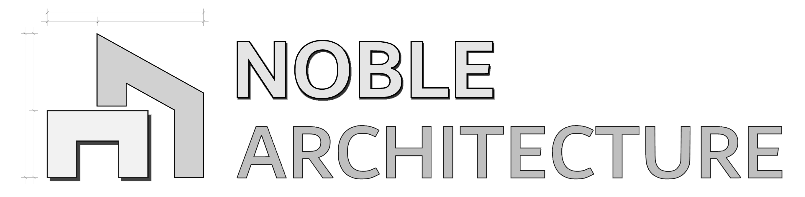

Element Assembly Studio Pro
by Noble Architecture
Windows
Interior Doors
Settings
Live Mode
Measure Opening
2D Preview
Reset View
Reset Elements
Export DXF
Dimensions
Glaze Bars
Cill & Frame
Options
Door Panel
Create New Window
Update Window
Window Info
Window ID:
-
Description:
Created:
-
Modified:
-
Interior Door Configurator
2D Preview
Reset View
Plan View
Elevation View
Opening & Lining
Panel & Swing
Architrave
Handle
Options
Joinery Finish
Handle Finish
Create New Door
Update Door
Door Info
Door ID:
-
Description:
Created:
-
Modified:
-
Settings & Developer Tools